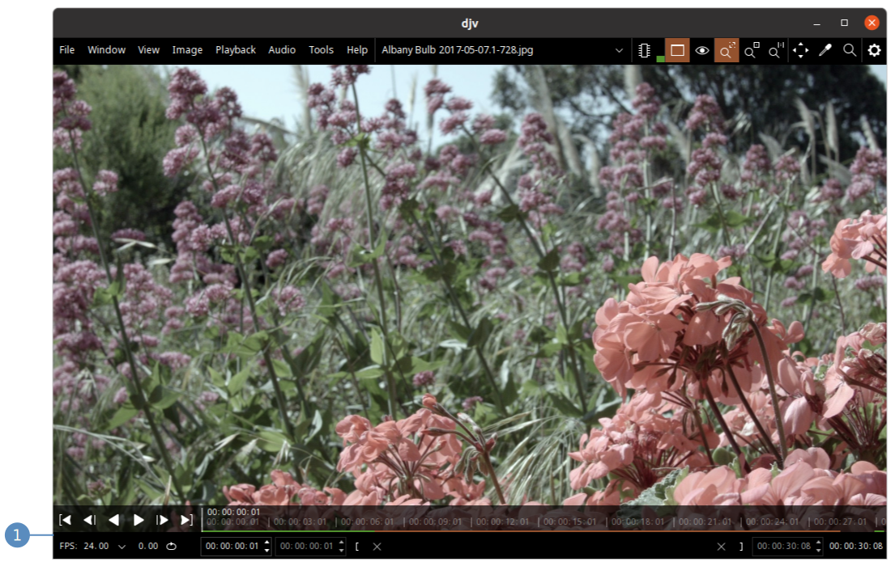
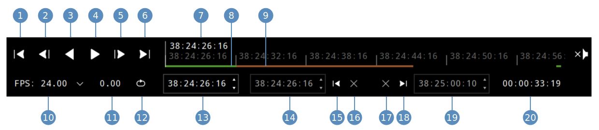
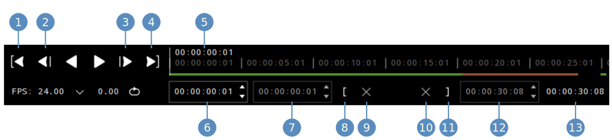

Time can be shown in either timecode or frames. The time units can be configured in the settings.
- Open the settings
- Expand the "General" section
- Change the time units

Time can be shown in either timecode or frames. The time units can be configured in the settings.
The playback controls are located at the bottom of the window:

Playback controls:

Frame controls:

Memory cache: